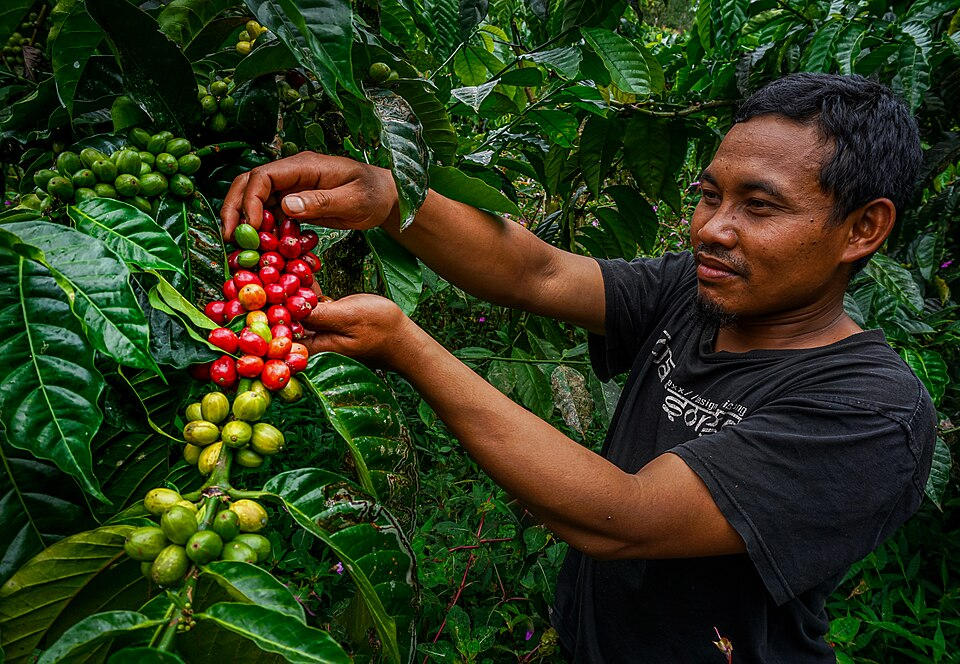

Beli produk warga
Pilih produk, lalu kirim pesanan lewat WhatsApp ke penjualnya. Pembayaran dilakukan langsung kepada penjual.
Tidak ada produk yang cocok. Ubah kata kunci atau pilih "Semua".
Cara memesan
Pembayaran dilakukan langsung kepada penjual, tunai atau transfer.
- Pilih produk
Tekan "Pesan via WhatsApp" pada produk yang Anda mau.
- Isi jumlah dan nama
Pesan WhatsApp terisi otomatis, tinggal dikirim ke penjual.
- Sepakati pengambilan
Ambil sendiri di kios, atau minta dikirim di dalam desa tanpa biaya.
- Bayar saat barang diterima
Untuk pesanan besar, penjual dapat meminta uang muka 30 persen.
Kenalan dengan pembuatnya

Bu Karti dan perajin Sidorejo
Sudah tiga generasi keluarga Bu Karti menganyam bambu. Kini ia memimpin 18 perajin yang membuat besek, tampah, dan caping. Bambu diambil dari kebun sendiri dan ditebang saat musim kemarau agar lebih awet.
Pesanan di atas 100 buah butuh waktu sekitar dua minggu.

Pak Sutris dan kelompok tani kopi
Kebun kopi robusta Wanasari berada di ketinggian sekitar 600 meter. Buah dipetik merah, dijemur di para-para, lalu disangrai sedang di rumah sangrai BUMDes.
Boleh datang langsung untuk mencicipi dan melihat proses sangrai setiap Sabtu pagi.
Datang ke pasar desa
Pasar desa digelar setiap Minggu keempat di Lapangan Wanasari, pukul 06.00 sampai 11.00.
Hasil kebun
Sayur, pisang, dan gula aren langsung dari petani.
Makanan pagi
Bubur, serabi, dan aneka jajan pasar yang dibuat pagi itu.
Kerajinan
Anyaman bambu dan kopi kemasan dengan harga kios.
Mau memesan dalam jumlah banyak?
Beri tahu tanggal dan jumlahnya, lalu petugas kios BUMDes akan menghubungkan Anda dengan penjual.